ある関数 上の
上の 個の点が分かっているとします。
このとき、与えられたすべての点を通る多項式関数を求める方法がラグランジュ補間です。
個の点が分かっているとします。
このとき、与えられたすべての点を通る多項式関数を求める方法がラグランジュ補間です。
例として3点を通る補間関数を考えてみます。
下の図で、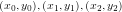の3点を通る関数 を求めるのがここでの目的です。
を求めるのがここでの目的です。
しかし、このような関数を直接求めるのは困難です。 そこで、補間関数を次の図のように3つの関数に分解します。
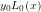(赤の曲線)は点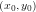を通りますが、それ以外の点 では0になるような関数です。
同様に、
では0になるような関数です。
同様に、 (緑の曲線)は点
(緑の曲線)は点 を通りそれ以外の点
を通りそれ以外の点 では0、
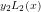(青の曲線)は点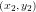を通りそれ以外の点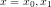では0となるような関数です。
これらの関数を用いると、は次のように表すことができます。
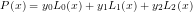
では0、
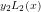(青の曲線)は点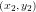を通りそれ以外の点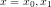では0となるような関数です。
これらの関数を用いると、は次のように表すことができます。
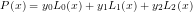
分解したあとの関数を求めるのは簡単です。
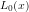はで0となるので、因数として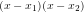を持つはずです。
 となるように係数を調節してやれば
となるように係数を調節してやれば
 となります。
となります。 についても同様に考えると次のようになります。
についても同様に考えると次のようになります。

以上のことを一般的な場合に拡張すると 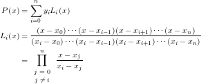 が得られます。これがラグランジュ補間の補間関数です。
一変数の場合について、実際にやってみました。 例によって、SVGにJavascriptを埋め込んだ簡単なアニメーションです。 すべての赤い点を通るように、黒い曲線を引きます。ドラッグ＆ドロップで点を移動できます。
ラグランジュ補間のような多項式補間では、補間する点の数が増えると下のように振動してしまいます。 このような現象をルンゲ現象と言います。これを回避するには、いくつかの区間に分割する、区間の端の点を多くする、などの対処方法をとる必要があります。